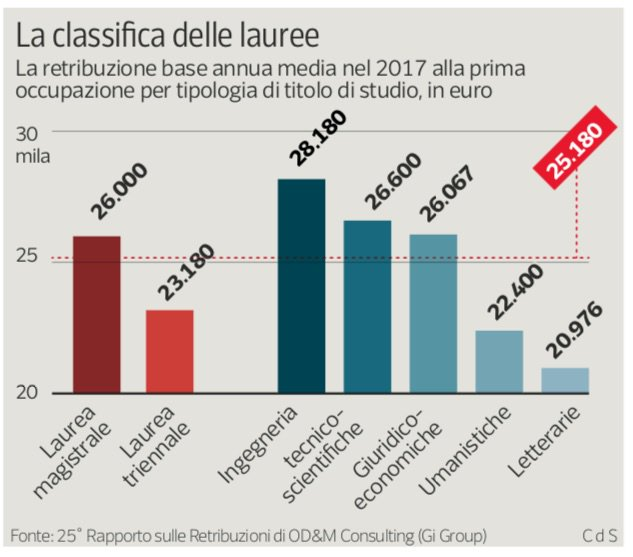

Si consideri il seguente grafico pubblicato dal Corriere della Sera in un articolo dal titolo Laurea, la classifica di chi guadagna di più al primo impiego
Analisi
Analizzare il grafico sopra riportato secondo gli aspetti seguenti:Question:- è stata definita chiaramente o è evidente una domanda (o più di una) a cui la visualizzazione risponde?
L'obiettivo del grafico è mostrare il reddito percepito come prima occupazione dai laureati in diverse discipline.
Data:- i dati mostrati sono validi e supportano la domanda?
I dati sono generalmente adatti all'obiettivo del grafico. Con alcune limitazioni:
- Mentre sono riportate le medie della laurea triennale e magistrale in generale, le singole discipline riportano un valore unico, che non si capisce se si riferisca ad entrambi i livelli o solo ad uno. Nel primo caso essendoci un significativa differenza tra i due livelli in generale (13%) l'aggregazione è poco sensata.
- Oltre alle differenza tra i livelli esistono, verosimilmente, delle differenze all'interno delle diverse discipline, questi dati (o incertezza) non sono mostrati.
- Non è chiara la differenza tra lauree "Umanistiche" e "Letterarie".
- Non sono note le consistenze numeriche dei lavoratori con titolo di primo e secondo livello anche se dalle medie apparentemente il numero di laureati magistrali lavoratori è 2.5 volte quello dei laureati triennali.
Visual:le caratteristiche visuali sono usate appropriatamente?
Riguardo gli aspetti visuali si valuti l’integrità visuale secondo i tre aspetti:
Proportionality:- le misure sono riportate in maniera uniformemente proporzionale?
Il diagramma a barre non parte dallo zero, questo rappresenta un serio problema di proporzionalità.
Utility:- tutti gli elementi presenti nel grafico trasmettono informazioni utili?
I colori della barre, salvo la distinzione tra discipline (azzurro) e livelli (rosso) codificano un'informazione che è già codificata dalla posizione e dall'etichetta sottostante.
Clarity:- i dati del grafico sono chiaramente identificabili e comprensibili (opportunamente descritti)?
Le etichette relative ai livelli ed alle discipline sono riportate inclinate di 45°, cosa che le rende difficili da leggere.
Il fatto che la linea tratteggiata rossa ed il valore su sfondo rosso rappresentino la media è una congettura, ragionevole ma non supportata da elementi concreti.
Design
Riprogettare la visualizzazione in modo da risolvere i problemi evidenziati nell'analisi.
Soluzione1: uso di barplot orizzontale
Soluzione2: uso di dotplot orizzontale
Inserire le risposte all'interno del presente file,
in particolare negli elementi <div>
che hanno come classe answer.